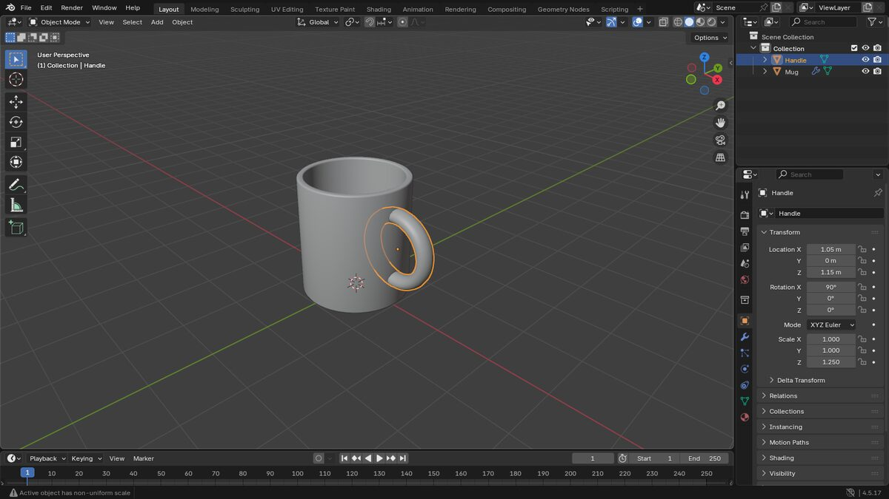

Lesson 9 of 10
Adding the Mug Handle
Add a torus, move and rotate it into a handle, and shape it.
The body of the mug is ready from Lesson 8. Now we give it a handle made from a torus (a ring shape, like a donut).
1. Add a torus
Press Shift + A and choose Mesh > Torus. Open the small Add Torus panel at the bottom left of the Viewport and set Major Radius to 0.6 and Minor Radius to 0.13. The major radius is the size of the ring, and the minor radius is the thickness of the tube. Right-click the torus and choose Shade Smooth. Rename it to Handle by double-clicking its name in the Outliner.
2. Move and rotate it
Open the Object tab in Properties (the orange square icon). In the Transform panel type these values:
| Field | Value |
|---|---|
| Location X, Y, Z | 1.05, 0, 1.15 |
| Rotation X | 90 |
| Scale Z | 1.25 |
Rotation X = 90 stands the ring upright, and Location X = 1.05 puts one side of it inside the wall of the mug, so the handle looks attached.

Exercise
Change the Minor Radius to 0.2 and then to 0.08 in the Adjust Last Operation panel (only works right after adding the torus) or in a fresh torus, and see which handle looks best for your mug.
The next lesson adds color and renders the mug as a final image.